📅 Informações Importantes
⚠️ Recebimento somente por AGENDAMENTO
📋 Horário de recebimento das notas fiscais:
De segunda a sexta-feira, das 07h00 às 14h00
🚛 Horário de descarga:
De segunda a sexta-feira, das 07h00 às 18h00
🚛 Início do Procedimento
Ao chegar ao Atacadão, o motorista estaciona o caminhão no estacionamento e desce para ir até a portaria.
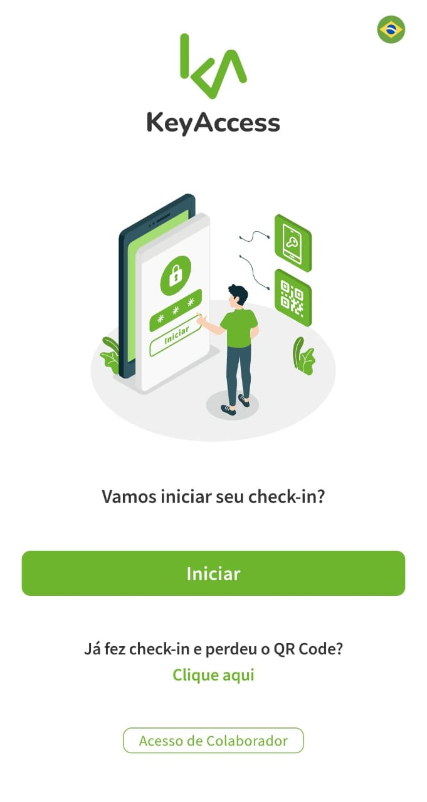
Após receber o link no celular ou acessar o totem da portaria, clique em "Iniciar" para começar o preenchimento das informações necessárias para o acesso.
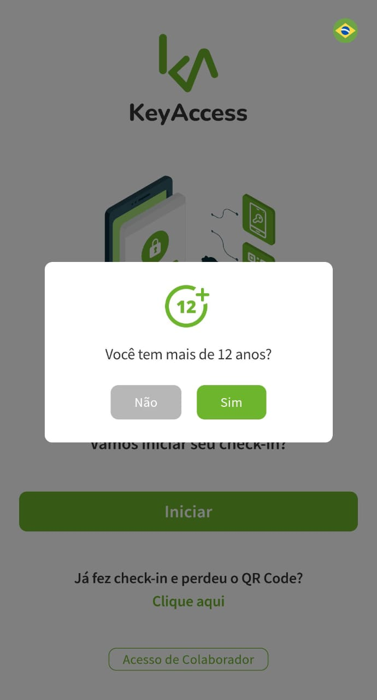
Na próxima tela, clique em "Sim" se você for maior de 12 anos.
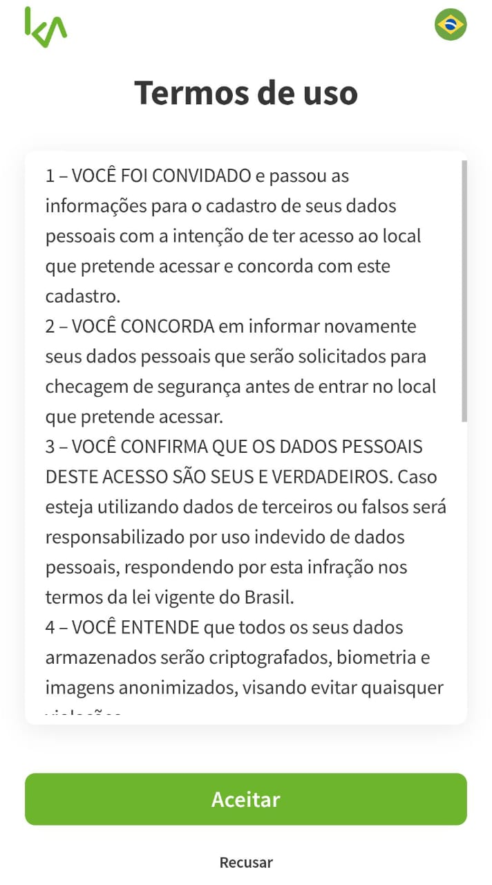
Leia os termos de uso e clique em "Aceitar" para prosseguir.
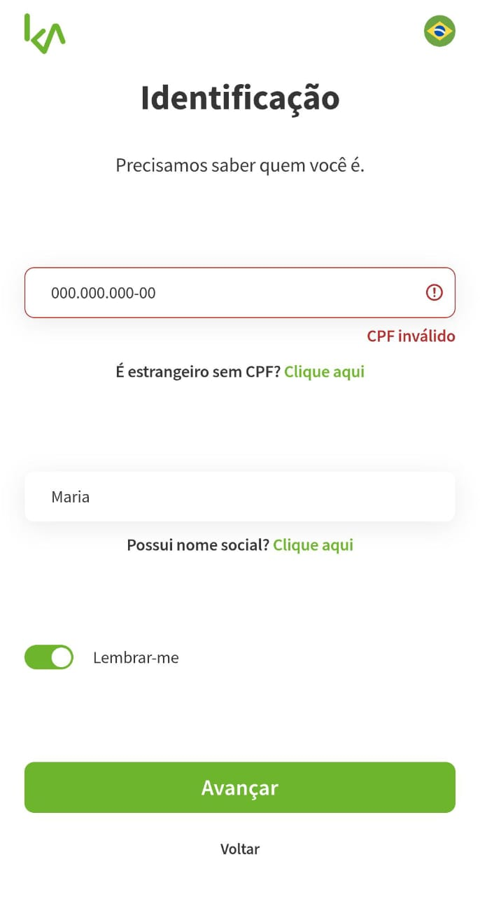
Digite o seu CPF e seu nome completo nos campos indicados. Em seguida, clique em "Avançar".
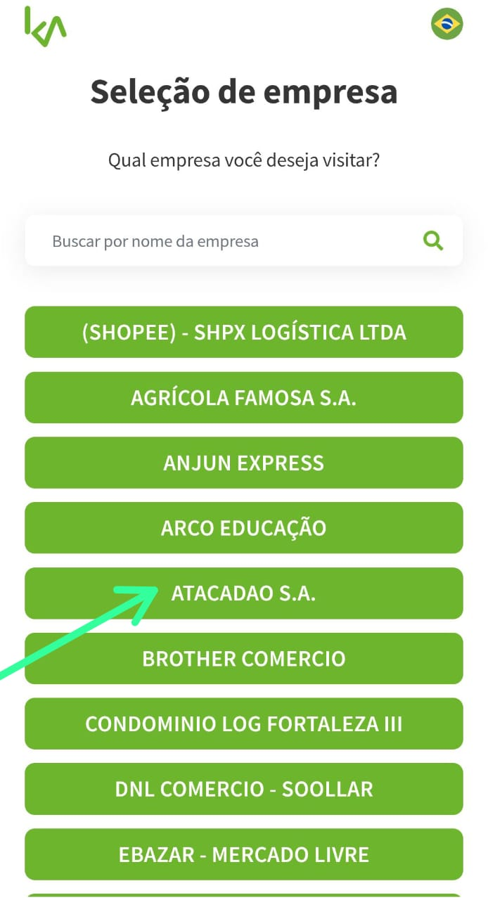
Na lista de empresas, escolha a opção "ATACADÃO S.A".
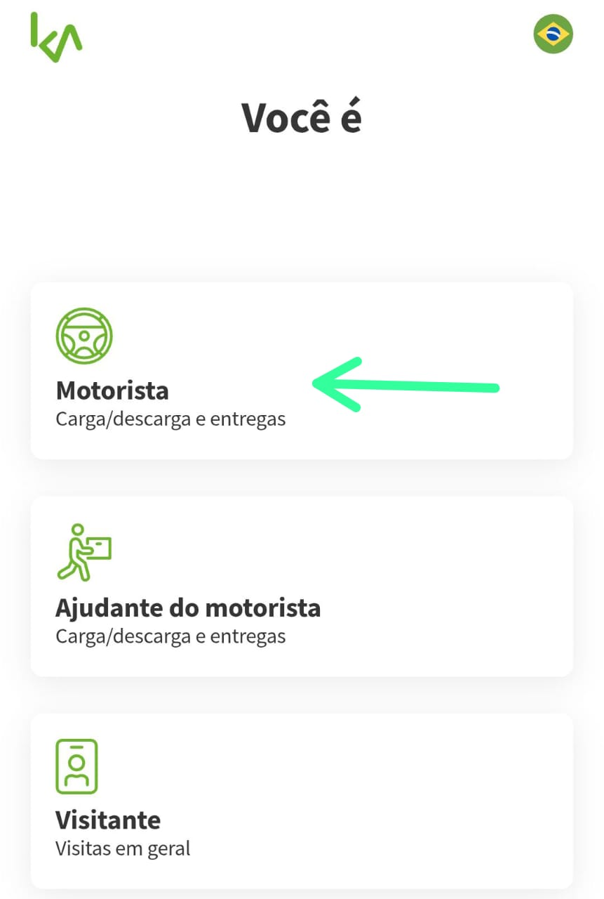
Selecione a opção "Motorista".
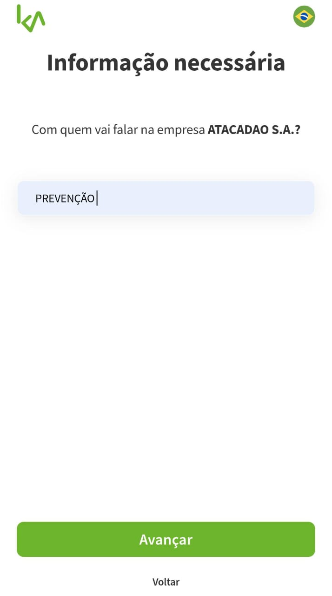
No campo "Com quem você vai falar", digite: Prevenção. Depois, clique em "Avançar".
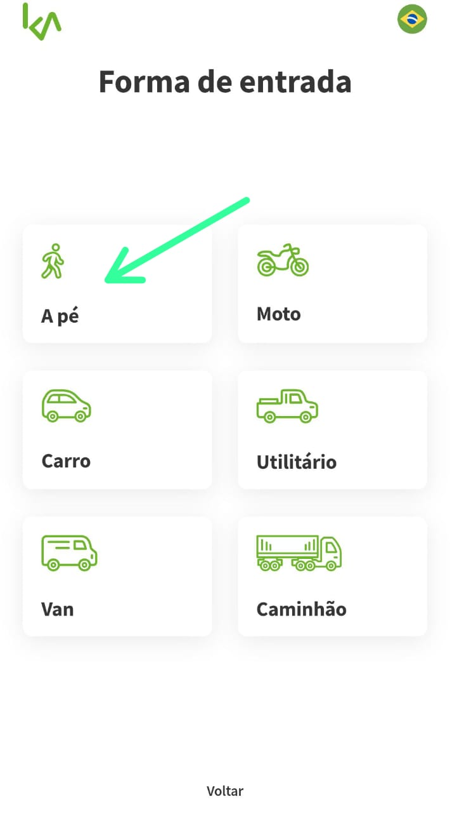
Na opção "Forma de entrada", escolha sempre "A pé", pois você vai entrar apenas para entregar as notas fiscais.
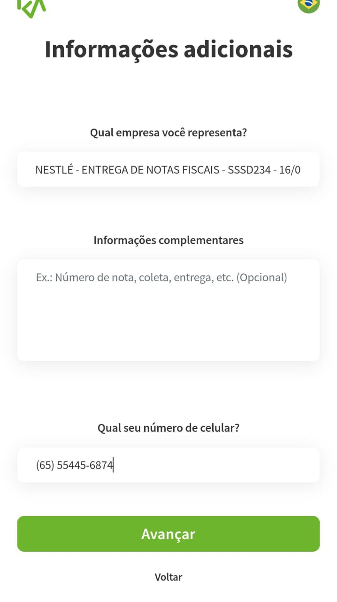
No campo "Qual empresa você representa", digite o seguinte formato:
Nome da empresa - ENTREGAS DE NOTAS FISCAIS - Senha do agendamento - Data do dia
Exemplo: NESTLE - ENTREGAS DE NOTAS FISCAIS - SSSD234 - 16/07
Em seguida, digite o seu celular com DDD.
Depois, clique em "Avançar".
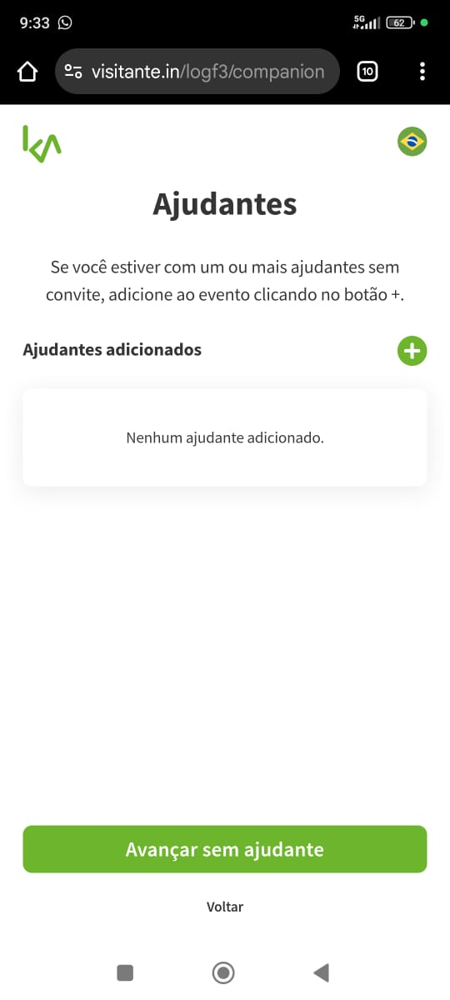
Se você tiver um ajudante, clique no sinal de "+" para adicionar o ajudante. Caso não tenha, clique em "Avançar" sem ajudante.
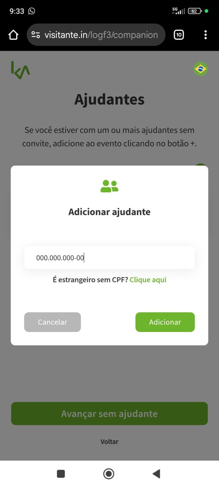
Se você tiver ajudante, preencha os dados solicitados referentes ao ajudante.
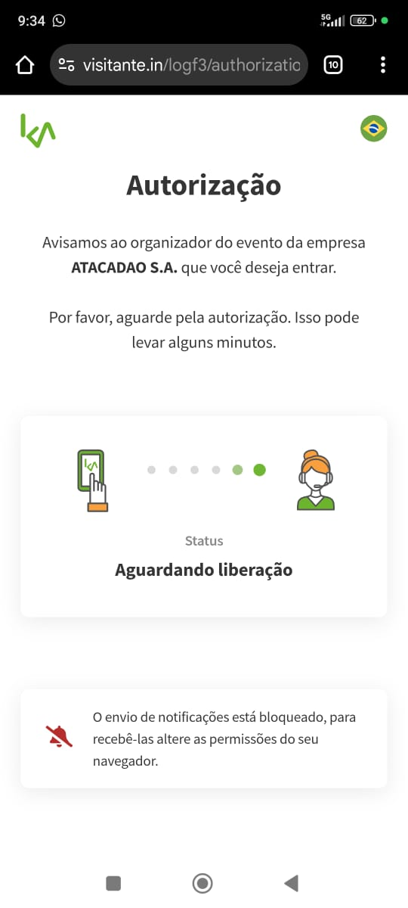
Aguarde a autorização do Atacadão para que seja gerado o seu QR Code de acesso.
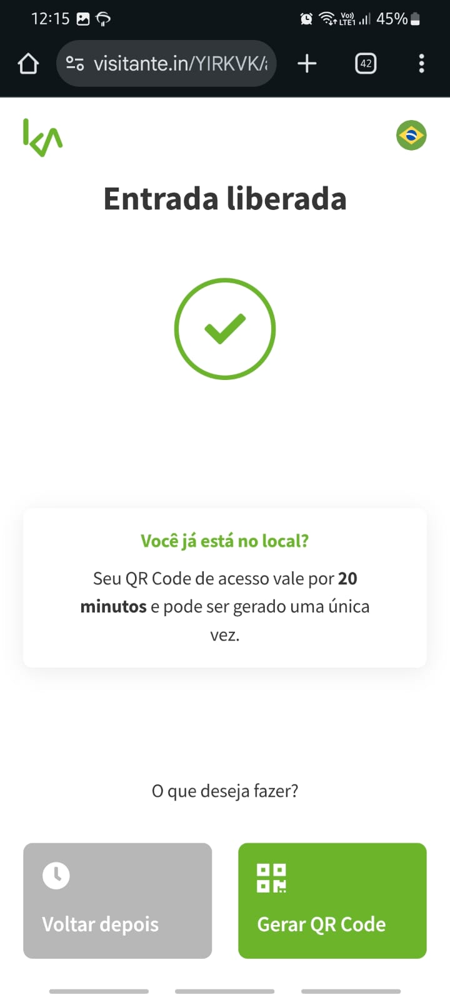
Quando for liberado, clique em "Gerar QR Code". O QR Code irá aparecer na tela do seu celular, permitindo a sua entrada para entregar as notas fiscais.
✅ Após a Entrada no Atacadão
- Entrando a pé: Após gerar o QR Code e entrar no Atacadão, o motorista vai até o local indicado para entregar as notas fiscais. Lembre-se de que o motorista sempre entra a pé, pois a entrega das notas fiscais é feita pessoalmente no prédio do Atacadão.
- Após a entrega das notas: Depois de entregar as notas fiscais, o motorista volta ao estacionamento da LOG e espera o Atacadão ligar para iniciar o descarregamento..
⚠️ Observação Importante:
No estacionamento da LOG há um ponto de apoio ao motorista, com banheiro, área de espera, água e vagas disponíveis. O motorista pode aguardar no local.